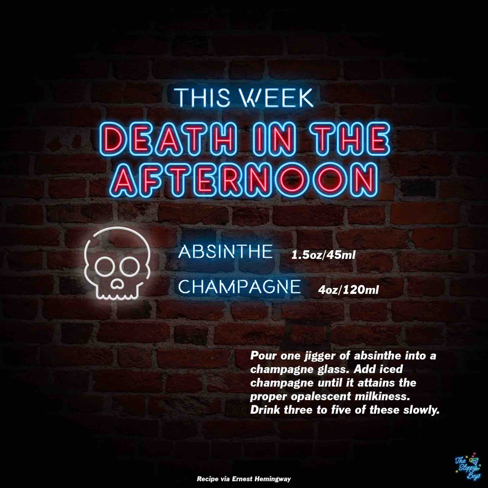

Death in the Afternoon
Ingredients
- Absinthe (1.5oz/45ml)
- Champagne (4oz/120ml)
Steps
- Pour one jigger of absinthe into a champagne glass.
- Add iced champagne until it attains the proper opalescent milkiness.
- Drink three to five of these slowly.
Notes